🏙️
Ciudad viva en 3D
Rascacielos, plaza con fuente, teleféricos que cruzan el cielo, autos en las calles y el Illimani nevado de fondo.
Compra el Prado, construye en Sopocachi y cobra alquiler en Calacoto. El juego de mesa de negocios ambientado en La Paz y El Alto, con ciudad en 3D, teleféricos y pago en Bolivianos.
¿Primera vez? Lee cómo instalarlo: necesitas permitir apps de origen desconocido.
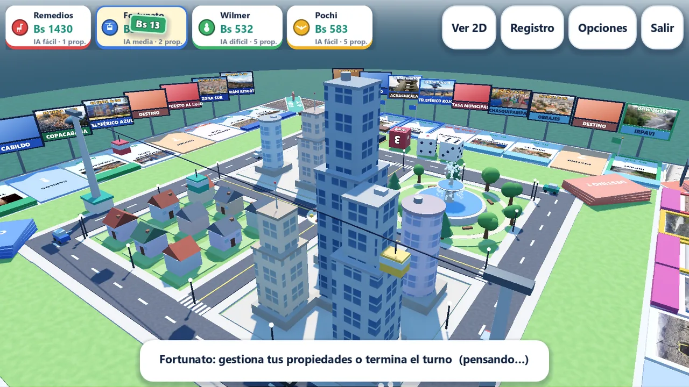
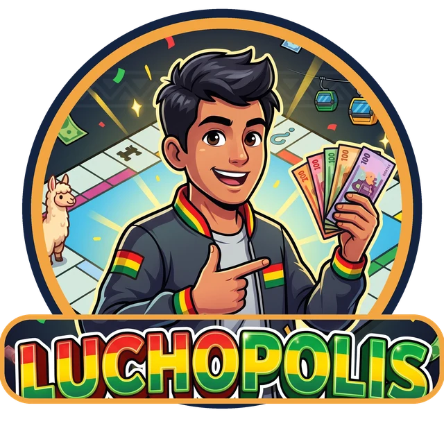
Tira los dados, recorre las zonas de La Paz y El Alto y conviértete en el magnate de la ciudad. Gana quien deja a los demás en quiebra.
Rascacielos, plaza con fuente, teleféricos que cruzan el cielo, autos en las calles y el Illimani nevado de fondo.
Completa un grupo de color y levanta casas y hoteles con animación de obra: andamios, polvo y todo.
Ofrece terrenos, dinero o salvoconductos. Ves en vivo cuánto das y cuánto recibes antes de cerrar el trato.
IA fácil, media y difícil: subastan, hipotecan, negocian y te cobran sin piedad.
Crea una sala por Wi-Fi local o Bluetooth y juega en la misma casa. También pasa-y-juega en un solo dispositivo.
Elige llama, cóndor, ekeko, cabina de teleférico y más. Ponle tu nombre y apodo, sin crear cuentas.
«Camilo, ¡avanza siete!», «¡Subasta de El Prado!». Una voz natural cuenta cada jugada; elige voz y volumen en Opciones.
Cada casilla luce su foto: Plaza Murillo, el Illimani, la cárcel de San Pedro, el Mirador Killi Killi y más. Toca un terreno y gira su título de doble cara.
Si pierdes la conexión en plena partida, la IA juega por ti hasta que pidas volver y el anfitrión te acepte.
Toca una imagen para verla en grande.
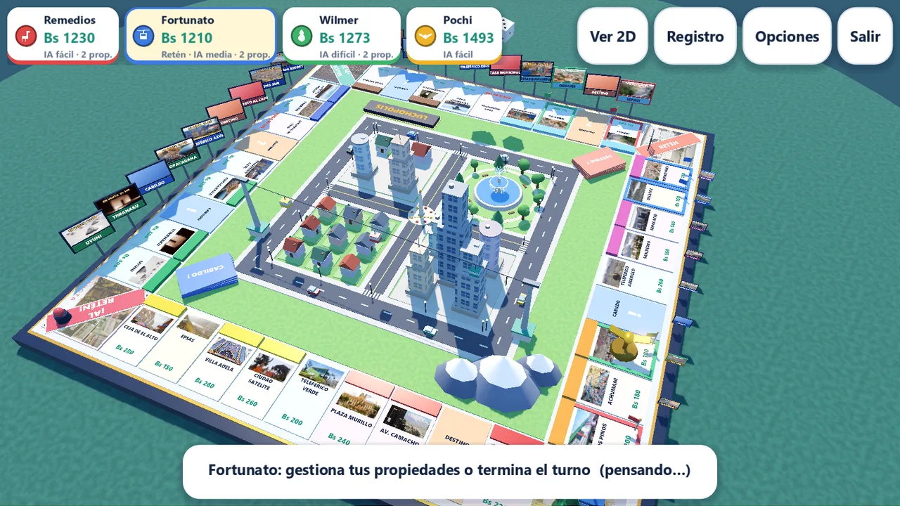
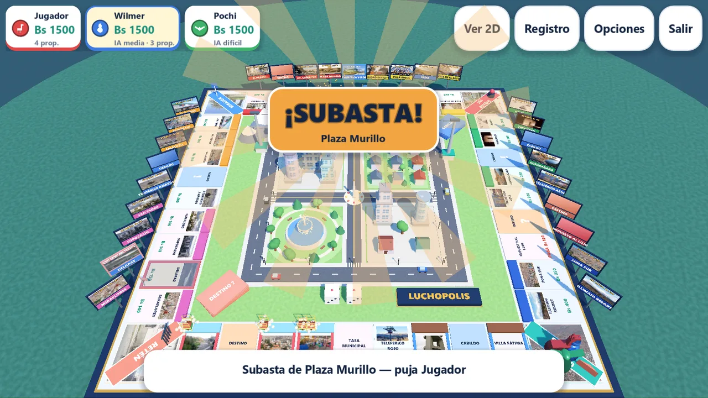
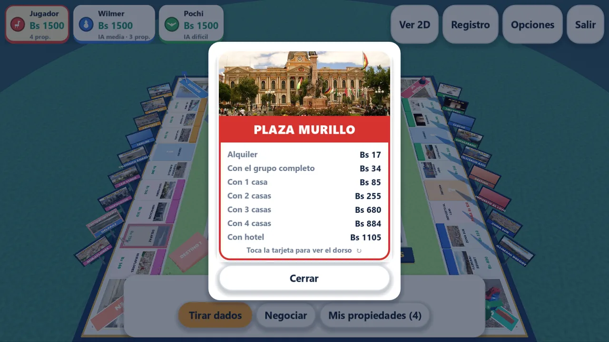
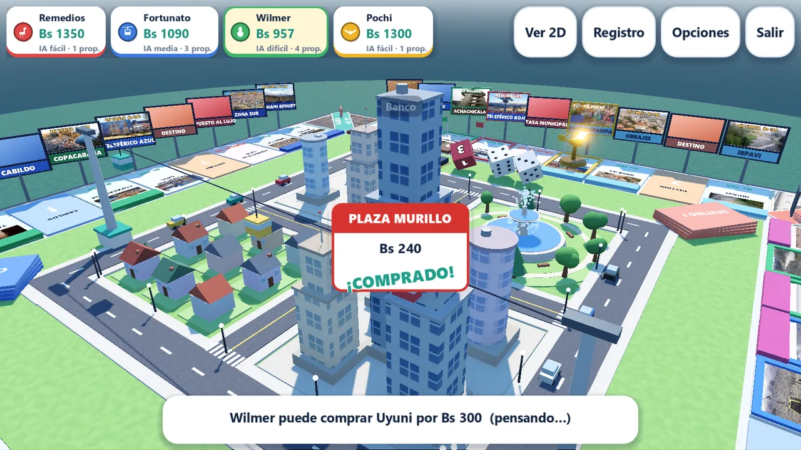
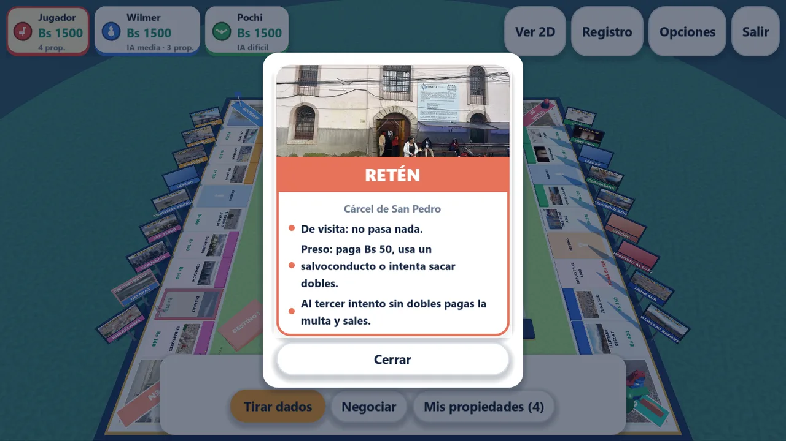
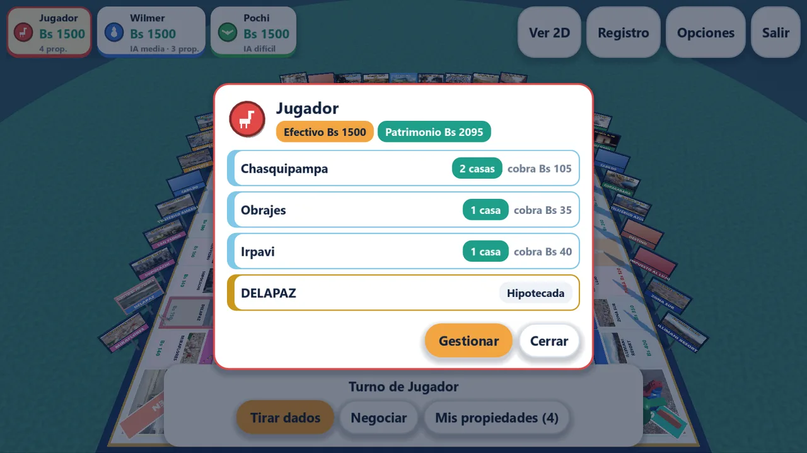
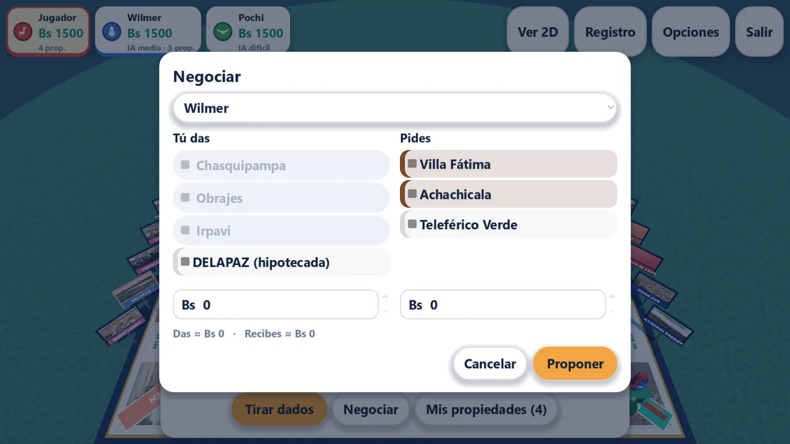
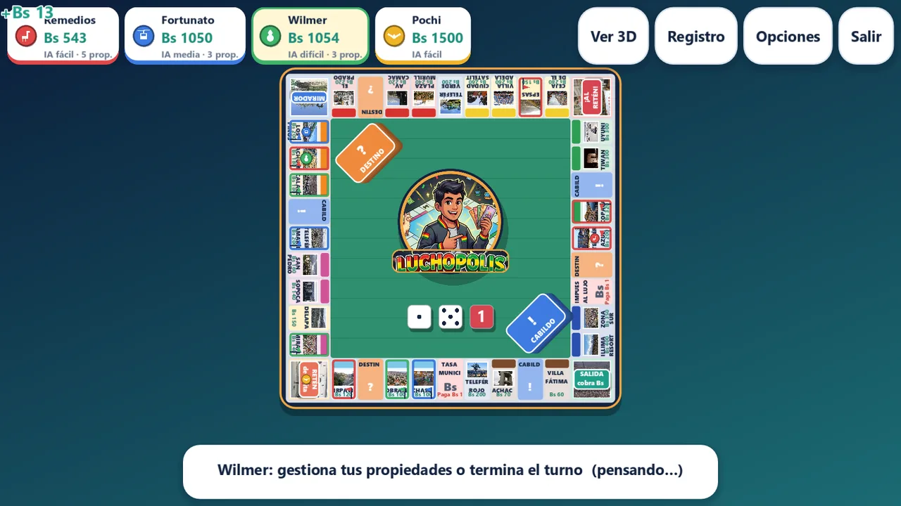
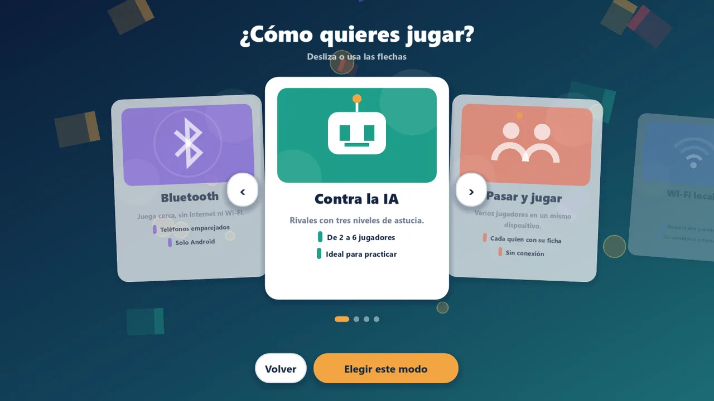
Luchopolis no tiene licencia ni firma digital oficial y no está publicado en Microsoft Store ni Google Play. Por eso Windows y Android te mostrarán una advertencia y tendrás que permitir la instalación de aplicaciones de origen desconocido. Es normal en juegos independientes: el juego no pide permisos de cuentas ni datos personales.
Luchopolis.apk desde esta página.Consejo: cuando termines, puedes volver a desactivar el permiso de apps desconocidas en Ajustes › Aplicaciones › Acceso especial.
Luchopolis.exe (para 64 bits) o Luchopolis_32.exe (para 32 bits). Si el navegador dice que «no se descarga habitualmente», abre el menú ⋯ y elige Conservar.Si tu antivirus lo bloquea por ser un ejecutable sin firma, agrégalo a sus excepciones.
Gratis, sin anuncios y sin crear cuenta.